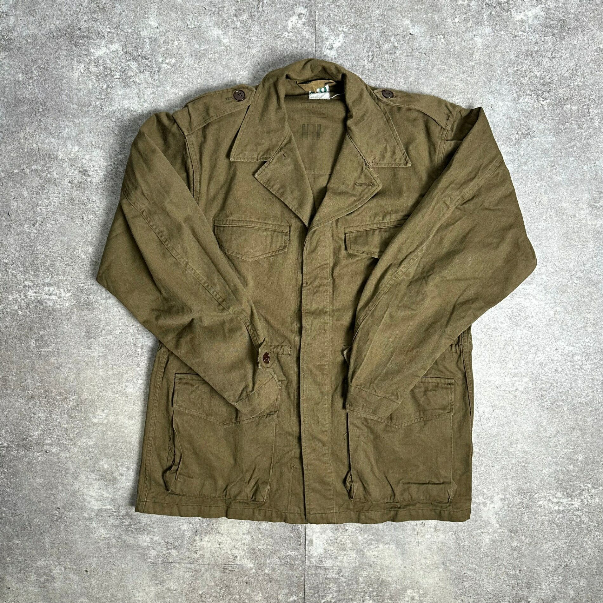

fabric · 1941
Herringbone twill: the first modern fatigue cloth
Herringbone twill was the American army's first modern fatigue cloth — cheap, open, and unexpectedly elegant.
established Published 2026-11-13 · last checked 2026-11-13

The name describes the weave: a twill whose diagonal reverses direction at intervals, producing a broken zigzag that looks like a fish skeleton. In American service it was a cotton cloth, and its virtue was a rare combination — more open than a tight plain weave or a satin, so it ventilated, while the diagonal ribs resisted abrasion.
It clothed the utility uniforms of the Second World War: the P-41, P-42 and P-44 fatigues, the Navy's N-3 trousers, and the paratrooper's M-42 jacket whose cut reappears later in the tropical uniform. In 1943 the cotton was darkened to olive drab shade 7 for better concealment in the South Pacific — a colour change, not a weave change.
Its decline is equally instructive. HBT was a compromise: durable enough for utility wear, but still a comparatively heavy cotton. The tropical jacket moved to poplin and then ripstop, chasing weight and drying speed rather than abrasion resistance.
For a maker, HBT is the shirt-jacket cloth. It takes a flat-felled seam beautifully, softens with washing, and its diagonal texture reads at a distance without needing a print. The tell is the direction of the zigzag: real herringbone reverses, and the reversal should be visible across the width of the cloth.

Sources
- US WWII HBT utility uniform records
- Navy specification 55-J-9
- Tropical Combat Uniform lineage
- French M-47 HBT field jacket — listing photo © @ROAMWALK